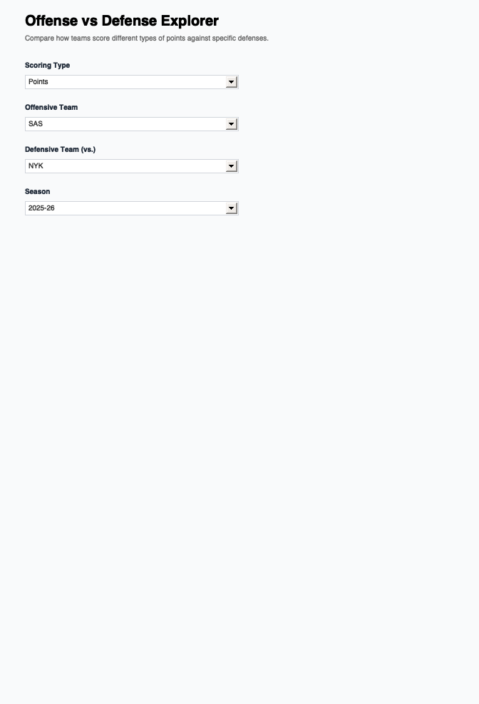

library(shiny)
library(tidyverse)── Attaching core tidyverse packages ──────────────────────── tidyverse 2.0.0 ──
✔ dplyr 1.1.4 ✔ readr 2.1.5
✔ forcats 1.0.0 ✔ stringr 1.6.0
✔ ggplot2 4.0.1 ✔ tibble 3.2.1
✔ lubridate 1.9.3 ✔ tidyr 1.3.1
✔ purrr 1.0.2
── Conflicts ────────────────────────────────────────── tidyverse_conflicts() ──
✖ dplyr::filter() masks stats::filter()
✖ dplyr::lag() masks stats::lag()
ℹ Use the conflicted package (<http://conflicted.r-lib.org/>) to force all conflicts to become errorslibrary(ggplot2)
library(plotly)
Attaching package: 'plotly'
The following object is masked from 'package:ggplot2':
last_plot
The following object is masked from 'package:stats':
filter
The following object is masked from 'package:graphics':
layout# Load pre-computed data from CSVs
load_season_data <- function(szn) {
shooting <- read.csv(paste0("https://raw.githubusercontent.com/jsettimi/joseph-settimi-site/main/scripts/data/shooting_", szn, ".csv"))
teams <- read.csv(paste0("https://raw.githubusercontent.com/jsettimi/joseph-settimi-site/main/scripts/data/teams_", szn, ".csv"))
list(shooting = shooting, teams = teams)
}
# Load default season
data_2025 <- load_season_data("2025-26")
players <- data_2025$shooting
teams_df <- data_2025$teams
ui <- fluidPage(
tags$head(
tags$style(HTML("
body {
font-family: -apple-system, BlinkMacSystemFont, 'Segoe UI', sans-serif;
background-color: #f9fafb;
}
.shiny-input-container {
margin-bottom: 1.5rem;
}
.shiny-input-container label {
font-weight: 600;
color: #1f2937;
margin-bottom: 0.5rem;
font-size: 0.95rem;
}
select, input {
border-radius: 6px;
border: 1px solid #d1d5db;
padding: 0.5rem 0.75rem;
font-size: 0.95rem;
}
select:focus, input:focus {
outline: none;
border-color: #0ea5e9;
box-shadow: 0 0 0 3px rgba(14, 165, 233, 0.1);
}
h1 {
color: #000;
font-weight: 800;
margin: 0 0 0.5rem 0;
font-size: 2rem;
}
.section-desc {
color: #666;
margin-bottom: 2rem;
font-size: 1rem;
}
#stat_label, #offense_label, #defense_label {
display: block;
font-weight: 600;
margin-bottom: 0.5rem;
}
"))
),
div(
style = "padding: 2rem; max-width: 1200px; margin: 0 auto;",
h1("Offense vs Defense Explorer"),
p("Compare how teams score different types of points against specific defenses.",
class = "section-desc"),
fluidRow(
column(3,
selectInput("stat", "Scoring Type",
choices = c("Points" = "POINTS", "Drives" = "DRIVE",
"Catch & Shoot" = "CATCH_SHOOT", "Pull Ups" = "PULL_UP",
"Paint" = "PAINT", "Post" = "POST", "Elbow" = "ELBOW"),
selected = "POINTS")
),
column(3,
selectInput("offense", "Offensive Team",
choices = sort(unique(teams_df$TEAM_ABBREVIATION)),
selected = "SAS")
),
column(3,
selectInput("defense", "Defensive Team (vs.)",
choices = sort(unique(teams_df$TEAM_ABBREVIATION)),
selected = "NYK")
),
column(3,
selectInput("season", "Season",
choices = c("2025-26", "2024-25", "2023-24", "2022-23", "2021-22"),
selected = "2025-26")
)
),
plotlyOutput("ovd_plot", height = "650px")
)
)
server <- function(input, output, session) {
# Reactive data loader
season_data <- reactive({
tryCatch({
load_season_data(input$season)
}, error = function(e) {
list(shooting = players, teams = teams_df)
})
})
output$ovd_plot <- renderPlotly({
data <- season_data()
players_szn <- data$shooting
col_map <- c(
POINTS = "POINTS",
DRIVE = "DRIVE_PTS",
CATCH_SHOOT = "CATCH_SHOOT_PTS",
PULL_UP = "PULL_UP_PTS",
PAINT = "PAINT_TOUCH_PTS",
POST = "POST_TOUCH_PTS",
ELBOW = "ELBOW_TOUCH_PTS"
)
stat_col <- col_map[input$stat]
# Filter for offensive team
off_players <- players_szn %>%
filter(TEAM_ABBREVIATION == input$offense) %>%
arrange(desc(!!sym(stat_col))) %>%
slice(1:10)
if (nrow(off_players) == 0) {
return(plotly_empty(type = "scatter", mode = "markers") %>%
layout(title = "No data available"))
}
stat_label <- gsub("_", " ", input$stat)
p <- off_players %>%
ggplot(aes(x = reorder(PLAYER_NAME, !!sym(stat_col)), y = !!sym(stat_col),
fill = !!sym(stat_col))) +
geom_col(alpha = 0.8, color = "#e5e7eb", linewidth = 0.5) +
scale_fill_gradient(low = "#e0f2fe", high = "#0ea5e9", guide = "none") +
coord_flip() +
theme_minimal() +
labs(
title = paste0(input$offense, " vs ", input$defense, " — Top 10 in ", stat_label),
subtitle = paste0("Season: ", input$season),
x = "",
y = paste0(stat_label, " PPG")
) +
theme(
plot.title = element_text(size = 16, face = "bold", color = "#000"),
plot.subtitle = element_text(size = 12, color = "#666", margin = margin(b = 10)),
axis.text.x = element_text(size = 11),
axis.text.y = element_text(size = 11, face = "bold"),
axis.title.x = element_text(size = 11, face = "bold"),
panel.grid.major.x = element_line(color = "#f3f4f6", linewidth = 0.3),
panel.grid.minor = element_blank()
)
ggplotly(p, tooltip = c("x", "y")) %>%
layout(margin = list(l = 150, b = 50, t = 80, r = 20),
hovermode = "y unified",
font = list(family = "-apple-system, BlinkMacSystemFont, 'Segoe UI', sans-serif"))
})
}
shinyApp(ui, server)
Listening on http://127.0.0.1:8478